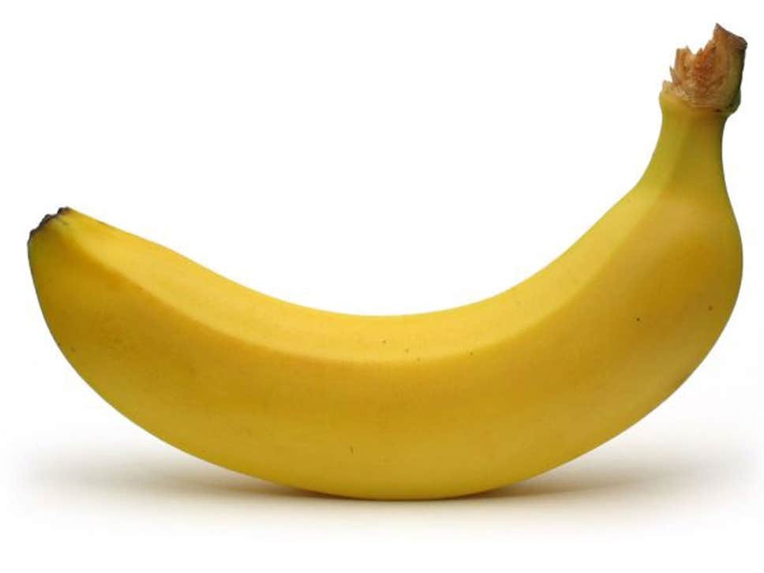
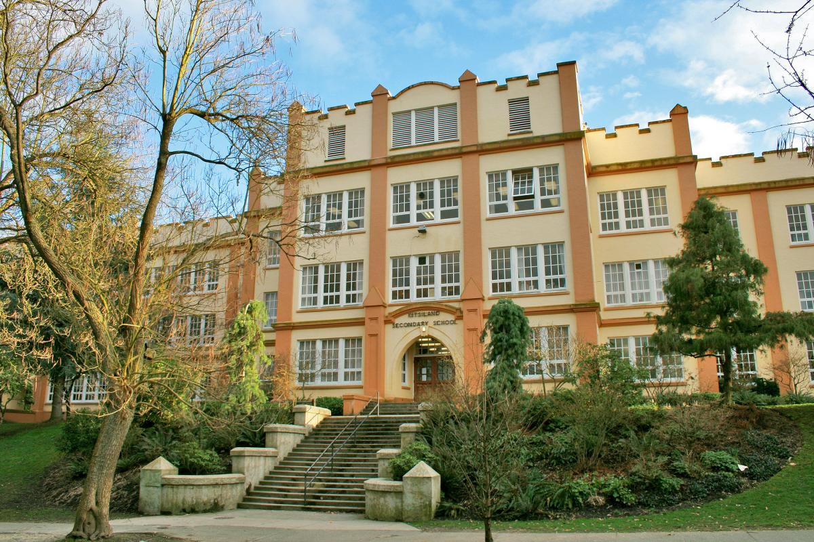
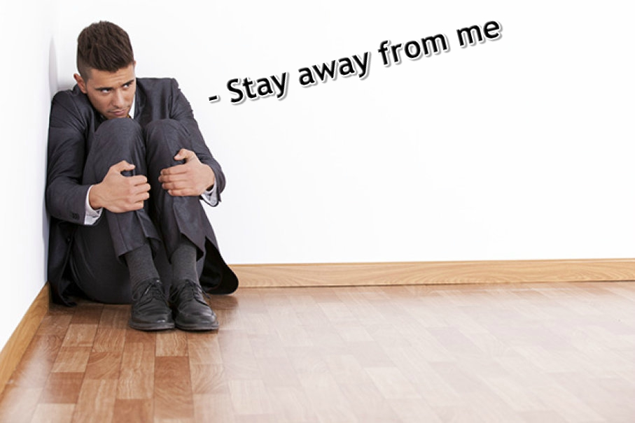
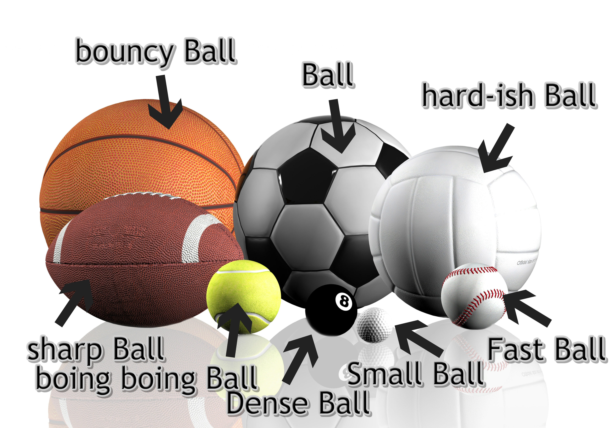
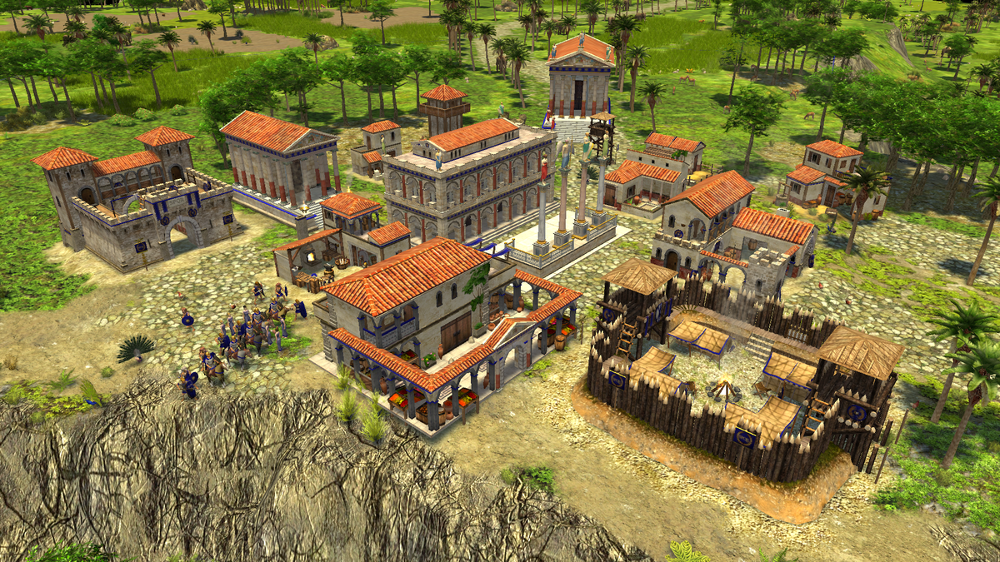
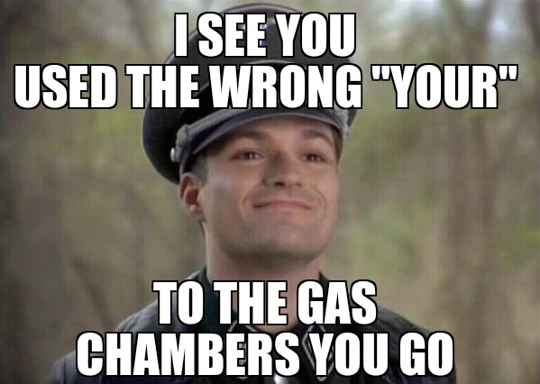
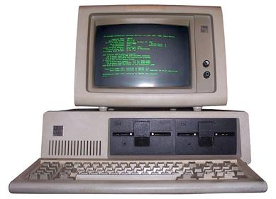
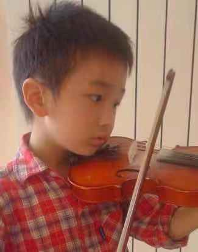

About Me
Introduction
Hello! My name Marshall and I have lived for 15 years (technically 16 but ok).
My parents are both born in china, which make me a 100% pure banana.

I was born in Montreal, but I moved around a lot and changed schools multiple times.
I currently attend Kitsilano Secondary School , which is much bigger than any other schools I've been to.

(I feel like I'm giving away too much personal information.)
Personality
I am a quiet and reserved individual
(I hate it when people call me shy. I prefere to use the word "reserved" because it sounds better :3)
who enjoys hiding in a corner for the greater duration of my life.

Sometimes I appear to be cold and logical but deep down, I am a warm and emotional person.
Sometimes my personality traits contradict each other. I can act like a completely different person in different situations.
Hobbies and interests
I used to swim competitively, although now I just swim for fun. I've been swimming for around 7 - 8 years (5-6 years competitively).
I enjoy play other sports as well, but I suck at pretty much every sport that involves balls (which is like 90% of all sports).

Like pretty much every kid my age, I love playing games.
I am , however, not a competitive gamer and only play games causually.
My favourtie genres of video games include FPS, RTS (RTT), RPGs, MMORPGs, and so on.

I also love reading mangas and watching animes (although it's kinda time consuming, so I don't do that anymore).
I guess you could say that I'm a massive weeb, whether that's a good thing or not.
I am a person with high moral standards and I get triggered everytime I see, hear, or experience anything that I deem as morally/ethically incorrect.
I also dislike bad grammar and it triggers me when I see people on the internet mixing up their, there, and they're or spelling literally "litteraly"

(or in some other way that does not even remotely resemble the actually word).
I also dislike homework and school (like everyone else), which quite ironic because I'm writing this as an assignment for school.
Why I signed up for this course/what I've learned so far
I've always had an interest in computers.

But the main reason why I signed up for CS10 (and IT 9) is partially because my parents insisted (which is a synonym for forced
that I should because they saw all the other electives as utterly useless (being asian and all).
So far, I've learned how to make a simple game with gamemaker (with minimal coding ofc). My goal would be to learn how to code
(without dragging and dropping code blocks).
I would also want to learn how to graphic design and how to create basic animations (I'm not sure if that's even included in the curriculum though).
I believe this will be helpful in whatever career I choose to persue in the future.
All in all, I'm looking forward to this year!
Now that I look back at my writing, I realized that the majority of it was about me (hence the title I guess) and that only a tiny portion is actually
on my opinions on this course.
By the way, are we suppose to include a picture of ourselves?
I forgot, so I'm just going to throw in a baby photo of me because I don't have any photos on this PC.

I guess that's the end of this assignment/blog! Uh...bye!